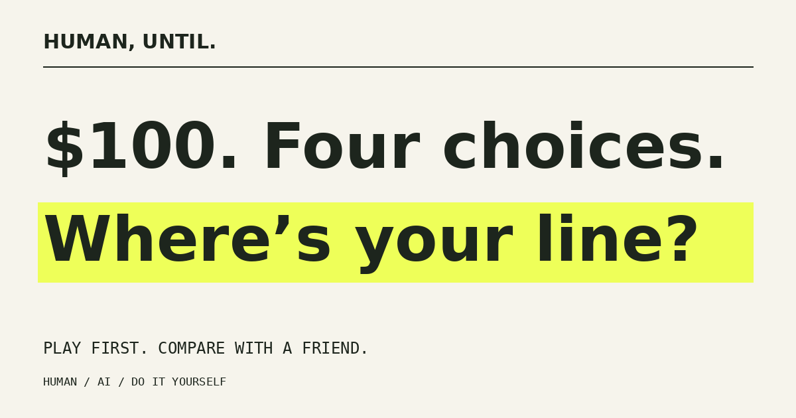

VERSION 2 / READY-TO-USE LAUNCH KIT
$100.
Four choices.
A conversation.
Four quick purchases, a real budget constraint, and a personal role reversal built from the player’s own decision. Then compare with a friend.
The teaser
Download the 15-second vertical teaser
Original typographic animation, 1080 × 1920, silent. Post as-is or add your own voice. This is a teaser, not a staged player reaction.
Copy for X
$100. Four choices. Pay a human. Pick the AI. Or do it yourself. Then the game puts YOUR work on the checkout. Play first. Send a friend your receipt. See where you disagree. https://shemyakovcapt-beep.github.io/human-until/ #HumanUntil
TikTok / Reels / Shorts caption
You get $100. Your friend gets $100. Same four choices. Very different receipts. Play before reading the comments. #HumanUntil #BrowserGame #AI
The strongest follow-up clip is two people playing on one phone, then revealing their actual results. Let the disagreement be real. The game includes this mode.
Posters & cover

Landscape poster · Vertical story · 630 × 500 game cover


Players export their own receipt. After a comparison, the same button exports both players’ choices on one card.
How the loop works
- Play four decisions within $100.
- Revisit one affordable decision from the other person’s perspective.
- Send the challenge link: it preserves the exact set, even after the daily rotation.
- Your friend plays independently and sees both receipts.
- They send their result back. If your original receipt is saved in your browser, you see the comparison immediately.
There are three rotating sets. New dilemmas can be played immediately. Nothing is locked behind a timer, sign-up, or share requirement.
Before a public launch
This version is prepared for GitHub Pages. Check signed-out access, mobile Safari, Android Chrome, and social-app browsers before a broad launch.
Static files run without a paid AI API. If moving to another host, update the canonical URL, social image URL, launch copy, and posters. Embedded copies share the canonical site URL so challenges do not point at the iframe host.
What is verified
Automated checks cover all 456 valid final paths, reject 15 over-budget purchase combinations, compare every valid pair within each set, and verify that the final never penalizes a forced budget decision. Additional simulated-interface checks cover 24 complete flows, two-player handoff, saved receipts, undo, repeat, sharing fallbacks, legacy links, and 25 PNG exports.
These are code and rendering checks, not observed player research. Browser layout and real mobile share sheets have not been verified in this environment. No completion rate, share rate, or audience size is claimed.
The first useful experiment
Show the game to 10 people without explaining the twist. Ask where they hesitated, whether the choices felt fair, and whether they wanted to compare with someone. Then test the strongest clip with a small audience.
Compare real starts, completions, and returning friends when measurement is available. This version does not collect player analytics. There are no invented counts or fake activity indicators.
Creative context
The original concept was developed from discussion of AI recasting and short face-reaction formats during 12–19 October 2026. Version 2 focuses on scarce money and social comparison. It is an original creative treatment, without a claim of world-first novelty or guaranteed virality.
The small print
All prices, tasks and times are fictional. Both paid options are assumed to meet the brief and be licensed. DIY consumes your time. Results describe decisions, not moral worth. A personal twist selects a purchase where the human option was affordable at that moment.
The game stores the last solo receipt per set in the visitor’s browser and provides a clear button in How it works. It does not send choices to a server. Shared URL fragments contain the choices. Hosting may keep ordinary access logs. Made with AI assistance.